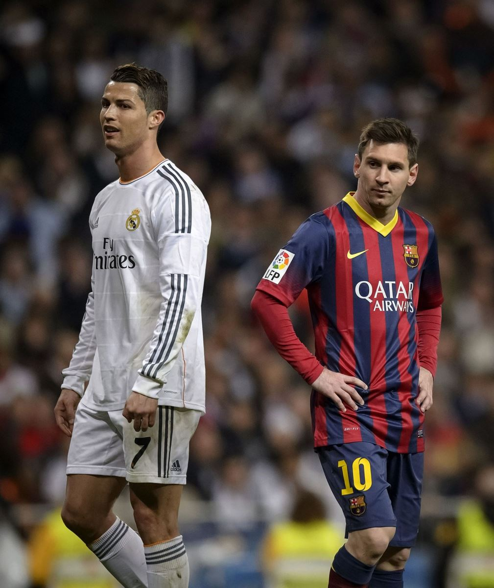

Đội Messi hay Đội Cristiano? Ngày nay bạn gần như bắt buộc phải chọn đứng về một bên nào đó. Thế giới bóng đá đã bị chia đôi. Tuy nhiên, lựa chọn không hề là công việc dễ dàng. Đấy không chỉ là vấn đề những thống kê và những danh hiệu. Mà là vấn đề về lòng trung thành, về cảm xúc hai cầu thủ này tạo ra. Đó là một tranh cãi toàn diện, có cả cảm xúc và tình yêu, cũng như thống kê và lý trí. Mọi chi tiết nhỏ nhất đều được mang ra phân tích và so sánh: những cử chỉ, cách hành xử trên sân, kỹ thuật rê dắt, những pha phạm lỗi, kiến tạo, bàn thắng, số trận đấu, các giải vô địch, những phần thưởng, các phát ngôn mới nhất, những nghiên cứu mới nhất.

.Cuộc đối đầu giữa CR7 và Messi đã tự nâng bản thân nó lên thành một trận derby kinh điển. Thể thao hấp dẫn hơn bởi sự kình địch giữa các cổ động viên, giữa các đội bóng và các quốc gia, cũng như qua sự so sánh về những giai đoạn khác nhau trong lịch sử. So sánh giữa một nhân vật này với một nhân vật nọ luôn là một thú vui ưa thích. Truyền thông thế giới bởi vậy cũng luôn ở trong tình trạng bị chia rẽ. Trong quyền anh có Ali và Foreman. F1 có Prost và Senna. Tennis có Borg và McEnroe. Bóng rổ có Magic Johnson và Larry Bird. Đua motor có Valentino Rossi và Marc Márquez. Điền kinh thì có Carl Lewis và Ben Johnson... Nhưng riêng trong bóng đá, chuyện một cầu thủ được xem là “vĩ đại” có thể bị làm lu mờ bởi một cầu thủ cùng thời là điều thực sự rất hiếm. Pelé, Cruyff, Maradona và Di Stéfano chưa bao giờ “giẫm chân” nhau, nếu xét thời điểm họ đứng trên đỉnh cao. Nhưng điều đó đã và đang diễn ra. Kể từ khi Cristiano Ronaldo đặt chân tới La Liga, anh và Lionel Messi đã cùng nhau tạo ra một cuộc chạy đua cá nhân chưa từng có trong lịch sử.
Từ đó dẫn chúng ta tới một câu hỏi quen thuộc: ai là người giỏi nhất? Đấy là câu hỏi đã được đặt ra không biết bao nhiêu lần trên báo, trên radio, truyền hình, cũng như trên các blog, và là khởi nguồn cho không biết bao nhiêu cuộc tranh cãi. Tất cả những ai có chút dính dáng tới bóng đá, từ các huấn luyện viên, các cầu thủ, giới chuyên gia cho tới những cổ động viên lớn tuổi chất phác, đều bị cuốn vào những cuộc tranh cãi đó. Mỗi người đều có ý kiến của riêng mình. Trong thời gian làm huấn luyện viên trưởng đội tuyển Anh, Fabio Capello từng nói: “Rất khó xác định xem cầu thủ nào xuất sắc hơn. Cả hai đều rất giỏi, nhưng là theo những cách khác nhau. Messi thì khó lường, những gì mà anh ta làm được khó ai theo nổi. Nhưng Cristiano thì rất mạnh mẽ, và sở hữu tốc độ khó tin.” Nhưng khi được hỏi nếu chọn một trong hai người để đưa vào đội của mình, ông sẽ chọn ai, Capello lại đùa: “Cristiano nói tiếng Anh. Nhưng Messi nói ngôn ngữ bóng đá.”
Cựu huấn luyện viên Argentina Sergio ‘El Checho’ Batista thì nhận định Messi là hay nhất, dù vẫn đánh giá rất cao Cristiano. “Với tôi, Messi là người xuất sắc nhất”, tờ Economist dẫn lời ông. “Tuy nhiên, cả hai cầu thủ đều xứng đáng có mặt trong danh sách những cầu thủ vĩ đại nhất. Leo sở hữu những kỹ năng đáng kinh ngạc, cực kỳ điêu luyện, và có cú sút chân trái khiến bao cầu thủ khác phải ghen tị. Cristiano thì sút rất chuẩn; anh ta rất mạnh mẽ, và di chuyển rất nhanh.” Pep Guardiola thậm chí còn tỏ ra cực đoan hơn khi khẳng định Leo là cầu thủ vĩ đại nhất trong lịch sử. “Messi là một hiện tượng vô tiền khoáng hậu. Chưa có ai như anh ấy, và tôi nghĩ sau này cũng sẽ không có ai khác như anh ấy,” vị huấn luyện viên của Manchester City từng nói.
Có một số người từ chối bị cuốn vào những tranh cãi. “Cả hai đều là những cầu thủ hàng đầu,” cựu huấn luyện viên đội tuyển Bồ Đào Nha Paulo Bento nhận xét. “Nếu họ không cùng chơi bóng ở một quốc gia thì đã không có những tranh cãi về việc ai là người giỏi hơn.” Và cũng có những người luôn đứng về phía Cristiano bất chấp điều gì xảy ra. “Anh ấy toàn diện hơn Messi, theo cách là anh ấy có thể dứt điểm tốt bằng cả hai chân lẫn bằng đầu,” Ángel Dealbert, cựu cầu thủ Valencia hiện đang chơi cho CD Castellón nhận xét. “Anh ấy rất mạnh trong những pha dốc bóng và dứt điểm. Messi thì mất điểm khi xét tới khả năng đánh đầu và sử dụng chân phải.” Carlo Ancelotti cũng không cần ai phải thuyết phục thêm về tài năng của Ronaldo. “Cristiano tới từ một thế giới khác. Anh ấy ghi bàn dễ dàng tới khó tin. Không dễ để tìm ra được từ ngữ miêu tả chính xác về anh ấy.” Như thể thế vẫn là chưa đủ, vị huấn luyện viên người Italia, thời điểm này còn dẫn dắt Bayern Munich, nói thêm: “Tôi không muốn tỏ ra thiếu tôn trọng bất kỳ ai, nhưng Cristiano chính là cầu thủ xuất sắc nhất mà tôi từng được dẫn dắt.” Ngay cả Usain Bolt cũng là một fan lớn của cầu thủ người Bồ Đào Nha. “Ronaldo hay hơn Messi, chẳng có gì phải nghi ngờ cả. Là cầu thủ, anh ấy toàn diện hơn nhiều,” nhà vô địch môn chạy tốc độ nhận xét, trước khi bổ sung: “Ngoài ra, anh ấy còn rất đáng yêu và là một nhân cách lớn.” Và tất nhiên, cuộc tranh cãi không thể kết thúc nếu chưa có ý kiến của Sir Alex Ferguson. “Người ta thường hỏi, ‘Ai là cầu thủ xuất sắc nhất trên thế giới?’ Rất nhiều người trả lời là Lionel Messi. Họ nói đúng. Chúng ta không nên tranh cãi về điều đó. Nhưng Ronaldo có thể chơi cho Millwall, Queens Park Rangers hay Doncaster mà vẫn ghi được một hat-trick. Đấy là điều mà tôi không chắc Messi cũng làm được. Ronaldo chơi được cả hai chân, và rất dũng cảm trong những pha không chiến. Còn Messi, theo tôi, là một cầu thủ kiểu Barcelona 100%.”
Từ lần đầu tiên Cristiano và Messi đụng độ, họ đã được mô tả như là những đối thủ lớn của nhau. Từ khi CR7 chuyển sang Real Madrid thì báo giới và các cổ động viên đã chuyển sang xem mối quan hệ giữa hai người là mối quan hệ kình địch. Họ vừa là những ngôi sao lớn vừa là những kẻ thù nguy hiểm. Người này là siêu nhân thì người kia là đá kryptonite. Cả các cổ động viên của Ronaldo lẫn những người không ưa anh đều bị ám ảnh bởi Messi - và ngược lại. Bất cứ khi nào các cổ động viên của bất kỳ đội bóng nào ở bất kỳ vùng nào trên thế giới muốn trêu điên một trong hai người, họ sẽ réo tên người còn lại. Trong các cuộc phỏng vấn, họ cũng thường xuyên bị yêu cầu phải đưa ra ý kiến về đối phương.
Tuy nhiên, bản thân hai cầu thủ lại luôn thể hiện sự tôn trọng tuyệt đối dành cho nhau, ít nhất là trên các phương tiện thông tin đại chúng. “Chúng tôi là đồng nghiệp. Về mặt nghề nghiệp thì chúng tôi là bạn bè. Tất nhiên, rõ ràng là chúng tôi không dành nhiều thời gian cho nhau bên ngoài thế giới bóng đá. Quan hệ giữa tôi với Messi cũng như quan hệ giữa tôi với nhiều cầu thủ khác thôi,” Ronaldo giải thích. “Anh ấy, cũng như tôi, luôn nỗ lực hết sức để có thể cống hiến nhiều nhất cho câu lạc bộ và cho đất nước mình. Nếu có cái gì đó gọi là kình địch, thì nó xuất phát từ việc cả hai chúng tôi đều muốn làm những điều tốt nhất cho các đội bóng của mình. Tôi hi vọng là trong vòng ít năm nữa, chúng tôi sẽ có cơ hội nhìn lại quãng thời gian này. Hẳn là vui lắm. Hãy xem bóng đá đúng bản chất là một trò chơi, một trò giải trí, một cái gì đó khiến chúng ta vui vẻ. Đó là một thứ đẹp đẽ, thứ mà bất kỳ ai trên thế giới này cũng muốn tận hưởng. Chúng ta cần phải nhìn nhận sự đối đầu trong bóng đá với một thái độ tích cực, bởi thực sự thì đó là một điều tốt.” Sự hiện diện của một người như Messi chính là động lực để nâng CR7 lên một tầm cao mới. Và chính cầu thủ người Argentina cũng có ý kiến tương tự: “Chẳng có sự kình địch nào, chưa bao giờ có. Đấy chỉ đơn giản là hệ quả của việc truyền thông cứ thích làm quá lên thôi. Cả hai chúng tôi đều chỉ muốn làm những gì tốt nhất cho các câu lạc bộ của mình. Không phải là chuyện Messi đối đầu với Ronaldo. Chưa bao giờ là như thế.”
Thực tế thì trong những ngày đầu, luôn có một chút căng thẳng mỗi khi hai người đụng mặt, cả trong các trận đấu lẫn trong các sự kiện họ cùng tham gia. Nhưng trong những mùa giải gần đây, họ đã hoàn toàn vượt qua được tình trạng này. Cả hai thậm chí còn bị bắt gặp đang thì thầm hay có những cử chỉ dành riêng cho nhau, như trong lễ trao giải Ballon d’Or hồi tháng 1/2015. Sự trưởng thành trên sân đã được phản chiếu lên thế giới thực. Nhưng dù vậy, thì cả hai người họ vẫn chỉ luôn hướng tới một mục tiêu giống nhau: đánh bại người kia. Chúng ta đang nói tới những người lúc nào cũng đói khát chiến thắng, những người lúc nào cũng hừng hực lửa khát khao, những người dường như không biết mỏi mệt. Ý chí vươn tới thành công của họ rất mạnh, và họ luôn tìm ra động lực để tiến bộ không ngừng.
Cả hai đều quan niệm thành công luôn ở trong tầm với, nên họ chỉ cần sự tự tin và quyết tâm để có được nó. Chưa ai trong số hai người từng bỏ cuộc. Họ biết rằng thành công đòi hỏi tính kỷ luật và sự hi sinh. Một điểm chung đáng kể giữa hai người là khả năng gạt cảm xúc sang bên để cống hiến hết 200% năng lực cho mục tiêu họ đang hướng tới. Họ đều là những tài năng thiên bẩm, có sẵn tố chất, không thiếu kỹ năng, và là những tay săn bàn tự nhiên. Nhưng họ cũng là hai nhà chuyên nghiệp bị ám ảnh bởi công việc mình làm và luôn tìm kiếm sự hoàn hảo.
Ai là người xuất sắc hơn? Đấy không phải là câu hỏi mà cuốn sách này cố gắng trả lời. Nhưng thông qua cuốn sách này, các bạn sẽ có được tất cả những gì các bạn cần phải biết về hai siêu sao bóng đá đương đại, để từ đó có thể tự mình đưa ra quyết định.